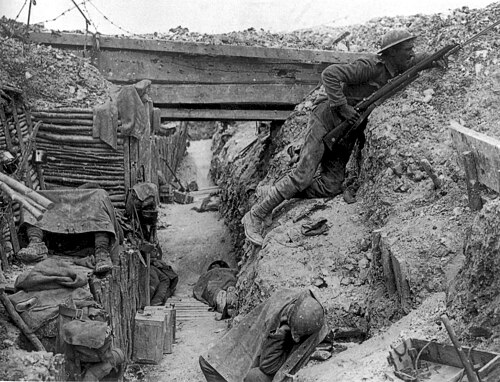

GCSE Exam Practice
Source A
From the personal pocket diary of Private Thomas Atkins, serving with the British Infantry in the Ypres Salient, November 1916.
"The communication trenches are flooded with three feet of icy water, and the clay walls are collapsing into thick slime. Our boots are permanently waterlogged, and we have to dig out our firesteps constantly. The enemy shelled our support lines yesterday, throwing up colossal geysers of wet mud that choked our drainage channels."
Source B
An official archival photograph taken on the Somme in 1916, showing British infantrymen in a muddy communication trench.

Provenance Scaffolding:
Source A is a private diary from a soldier on the front line; consider how this affects its honesty compared to an official account. Source B is an official photograph, which might be censored, but what does the undeniable presence of thigh-deep mud tell you regardless?
Exam Q46. 1 (a). How useful are Sources A and B for an enquiry into the difficulties faced by soldiers in the trench system of the Western Front? Explain your answer, using Sources A and B and your knowledge of the historical context. (8 marks)
Exam Q47. Describe one feature of the First Battle of Ypres. (2 marks)
Exam Q48. Describe one feature of the Battle of the Somme. (2 marks)
Exam Q49. Describe one feature of the support trench system on the Western Front. (2 marks)
Exam Q50. Describe one feature of the problems involved in transporting wounded soldiers away from the battleground. (2 marks)
Exam Q51. How useful are Sources A and B for an enquiry into the difficulties faced by soldiers in the trench system of the Western Front? Explain your answer, using Sources A and B and your knowledge of the historical context. (8 marks)
Source A
Source A: From the personal pocket diary of Private Thomas Atkins, serving with the British Infantry in the Ypres Salient, November 1916. 'The communication trenches are flooded with three feet of icy water, and the clay walls are collapsing into thick slime. Our boots are permanently waterlogged, and we have to dig out our firesteps constantly. The enemy shelled our support lines yesterday, throwing up colossal geysers of wet mud that choked our drainage channels.'
Source B
Source B: An official photograph taken on the Somme in October 1916. It shows British soldiers attempting to maintain a communication trench.

Exam Q52. How could you follow up Source A to find out more about the work of the stretcher bearers on the Western Front? (4 marks)
Source A
Source A: A diary entry from an RAMC officer at the Somme, 1916: 'The terrain is devastated. We cannot use the motor ambulances as the heavy rains and artillery have turned the roads into deep quagmires of mud. We are forced to use six horses to pull a single wagon.'